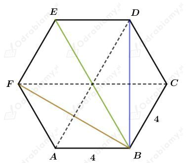
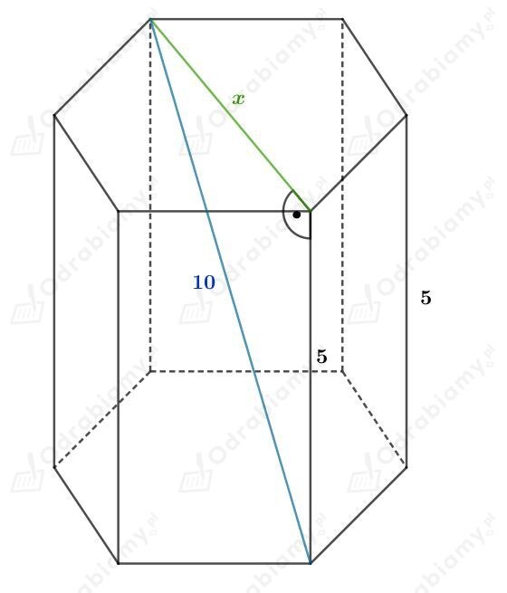
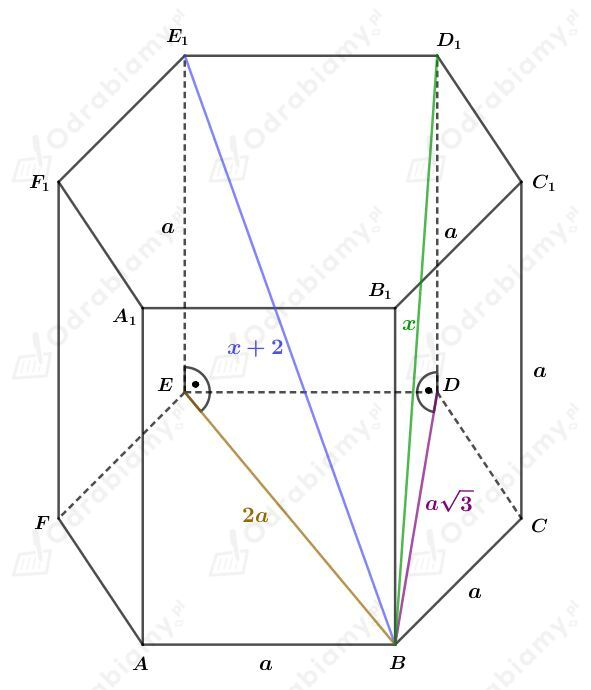
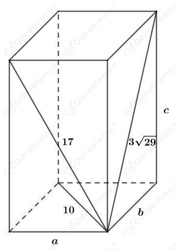
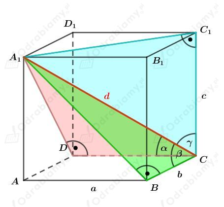
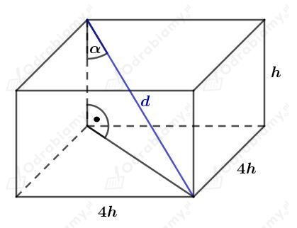
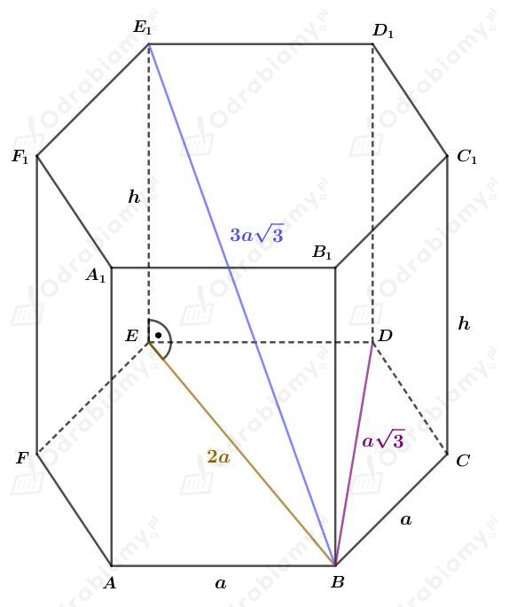
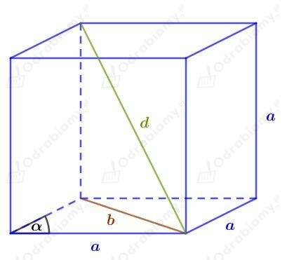
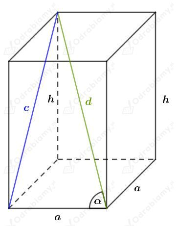

Dany jest graniastosłup prawidłowy sześciokątny. Wszystkie jego krawędzie mają długość 4 cm.
Wyznaczmy najpierw pewne długości przekątnych sześciokąta foremnego.
Sześciokąt foremny o boku długości 4 cm zbudowany jest z sześciu trójkątów równobocznych o boku długości 4 cm.
Rysunek:

Wyznaczmy długość wysokości trójkąta równobocznego o boku długości 4 cm. Mamy:
Zatem
oraz
Wyznaczmy długość przekątnej BE1. Korzystając z twierdzenia Pitagorasa dla trójkąta BEE1 mamy:
Wyznaczmy długość przekątnej BD1. Korzystając z twierdzenia Pitagorasa dla trójkąta BDD1 mamy:
Zauważmy, że trójkąt BFF1 jest przystający do trójkąta BDD1 zatem
Rysunek:

Korzystając z twierdzenia Pitagorasa mamy:
Wiemy, że każdy sześciokąt foremny o boku długości a zbudowany jest z sześciu jednakowych trójkątów równobocznych. Dłuższa przekątna sześciokąta długości x składa się z dwóch boków trójkąta równobocznego.
Obliczmy pole powierzchni podstawy, czyli pole sześciu trójkątów równobocznych o boku długości a. Mamy:
Obliczmy pole powierzchni bocznej. Mamy:
Obliczmy pole powierzchni całkowitej tego graniastosłupa. Mamy:
Różnica długości przekątnych graniastosłupa prawidłowego sześciokątnego wynosi 2 cm, zatem przekątne tego graniastosłupa mają długości x oraz x+2.
Rysunek:

Długość odcinka BE to podwojona długość boku sześciokąta foremnego. Długość boku BD to podwojona długość wysokości trójkąta równobocznego o boku długości a.
Korzystając z twierdzenia Pitagorasa dla trójkąta BEE1 mamy:
Korzystając z twierdzenia Pitagorasa dla trójkąta BDD1 mamy:
Przyrównując otrzymane wartości x mamy:
Dany jest prostopadłościan o bokach długości a, b, c.
Przekątne ścian tego prostopadłościanu mają długości 10 cm, 17 cm, 3√29 cm.
Rysunek:

Korzystając z twierdzenia Pitagorasa mamy:
czyli
Podstawiając wyznaczone b2 i c2 do trzeciego równania układu mamy:
Podstawiając a=8 do pierwszego równania układu mamy:
Podstawiając a=8 do pierwszego równania układu mamy:
Wyznaczmy pole powierzchni całkowitej tego prostopadłościanu. Mamy:
Założenie:
Przedstawmy na rysunku:

a)
Teza:
Dowód:
Odcinki A1B, A1D, A1C1 są przekątnymi ścian bocznych tego prostopadłościanu. Mamy zatem
Korzystając z definicji funkcji sinus dla trójkąta prostokątnego mamy:
Mamy teraz:
Korzystając ze wzoru na długość przekątnej prostopadłościanu mamy:
co kończy dowód.
b)
Teza:
Dowód:
Korzystając z definicji funkcji cosinus dla trójkąta prostokątnego mamy:
Mamy teraz:
Korzystając ze wzoru na długość przekątnej prostopadłościanu mamy:
co kończy dowód.
Dany jest graniastosłup prawidłowy czworokątny.
Oznaczmy długość krawędzi podstawy tego graniastosłupa (wyrażoną w cm) jako x, a długość wysokości (wyrażoną w cm) jako h.
Wtedy pole powierzchni podstawy tego graniastosłupa jest równe:
Natomiast pole powierzchni bocznej wynosi:
Wyznaczmy pole powierzchni całkowitej tego graniastosłupa. Mamy:
Z treści zadania wiemy, że pole powierzchni całkowitej jest 3 razy większe od pola powierzchni bocznej. Stąd mamy:
Korzystając ze wzoru na długość przekątnej prostopadłościanu mamy:
Niech 𝛼 będzie kątem, który tworzy przekątna tego graniastosłupa z jego krawędzią boczną.
Rysunek:

Korzystając z definicji funkcji cosinus dla trójkąta prostokątnego mamy:
Rysunek:

Wyjaśnienie:
Podstawą tego graniastosłupa jest sześciokąt foremny. Sześciokąt foremny o boku długości a zbudowany jest z 6 trójkątów równobocznych o boku długości a.
Długość krótszej przekątnej podstawy (odcinek BC) jest równa podwojonej długości wysokości trójkąta równobocznego o boku długości a. Zatem
Dłuższa przekątna jest trzy razy dłuższa od krótszej przekątnej podstawy, zatem
Długość odcinka BE jest równa podwojonej długości boku podstawy, zatem |BE|=2a.
Korzystając z twierdzenia Pitagorasa dla trójkąta BEE1 mamy:
Powierzchnia boczna zbudowana jest z sześciu przystających prostokątów o bokach długości a i a√23.
Obliczmy pole powierzchni bocznej tego graniastosłupa. Mamy:
Rysunek:

Korzystając z twierdzenia cosinusów mamy:
Obliczmy długość przekątnej tego graniastosłupa d. Korzystając z twierdzenia Pitagorasa mamy:
Wiedząc, że b2=2a2(1-cos𝛼) mamy:
Wiemy, że a>0, d>0 oraz obie strony równości są dodatnie, stąd:
Korzystając ze wzoru na cosinus podwojonego kąta
wiemy, że
Wykorzystując podaną powyżej własność mamy:
co kończy dowód.
Rysunek:

Korzystając z twierdzenia Pitagorasa mamy:
Ponownie korzystając z twierdzenia Pitagorasa mamy:
czyli
Korzystając z twierdzenia cosinusów mamy:
Wiedząc, że c2=h2+a2 mamy:
Wiedząc, że d2=h2+2a2 mamy:
Korzystając z pierwszego otrzymanego równania z twierdzenia Pitagorasa mamy:
Wiedząc, że a=dcos𝛼 mamy:
Korzystając z drugiego otrzymanego równania z twierdzenia Pitagorasa mamy:
Wiedząc, że h2=c2-d2cos𝛼 oraz a=dcos𝛼 mamy:
Przekształcamy otrzymaną wcześniej równość
wiedząc, że c=dsin𝛼. Mamy:
Wyznaczmy pole powierzchni bocznej tego graniastosłupa. Mamy:
co kończy dowód.
Dany jest graniastosłup prawidłowy n-kątny.
Liczba przekątnych graniastosłupa n-kątnego (każdy wierzchołek dolnej podstawy łączymy wierzchołkiem innym niż jego rzut prostokątny oraz wierzchołki obok niego) wynosi n(n-3).
Liczba przekątnych ścian bocznych (każda ściana jest prostokątem, więc ma dwie przekątne) wynosi 2n.
Wiemy, że liczba przekątnych tego graniastosłupa jest o 24 większa od liczby przekątnych jego wszystkich ścian bocznych. Stąd otrzymujemy równanie:
Zatem n=8.